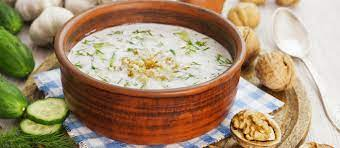

Recipe for a nice summer Bulgarian treat - Tarator

Description
Tarator is a Bulgarian cold soup made with Bulgarian yogurt, cucumbers, garlic,
chopped dill, sunflower oil, walnuts, and a bit of water or ice.
Ingredients
- 400 g Yogurt
- 2 Cucumbers
- A Clove of Garlic
- Walnuts(finely crushed)
- Sunflower oil
- Dill, chopped
Steps to make
- Peel the cucumbers and cut into small cubes.
- Stir yogurt while still in the pot, then add it to the cucumbers and continue stirring.
- Pour in half a liter of cold water (more or less water may be needed depending on the desired consistency).
- Crush the garlic with some salt in a mortar and pestle, then add to the soup together with ground walnuts and finely chopped dill.
Season with a little sunflower oil.
- Serve cold, as an appetizer.